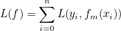
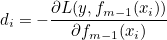

1. Introduction
Predicting default risk is an essential problem for financial institutions. Leveraging machine learning techniques with business data to make good predictions will not only empower trustworthy clients to be successful by providing loans, but also help financial institutions control business risk.
Our project focuses on using supervised and unsupervised machine learning techniques to predict applicant’s repayment ability based on historical loan application data and a wide range of credit and transactional data. Our project uses the “Home Credit Default Risk” dataset from Kaggle (300k+ applicants and 200+ features). The dataset is provided by Home Credit, a company that provides loans to unbanked populations who have insufficient credit histories.
2. Literature Review
From the machine learning perspective, our project is a binary classification problem, in which we need to predict whether the applicant can repay the loan. Traditional solutions of binary classification problems like Logistic Regression, SVM, Decision Tree and Naive Bayes could be implemented to build a model directly from the data. Besides building one single “strong” model, the other approach would be to build an ensemble of models to further get better prediction.
The main hypothesis behind ensemble learning approach is that when weak models are correctly combined, we can get more accurate models. Ensemble learning contains two approaches: Bagging and Boosting [1]. Bagging is a parallel process in which a large number of sub samples are generated by bootstrap sampling and then each weak model is trained on the sub sample independently. The final prediction is generated by ensembling the predictions from all the weak models (e.g. voting). Random Forest is a typical bagging method. Different with Bagging, Boosting is a sequential and additive process in which each weak model is learned iteratively aiming at decreasing the bias of previous weak models. The new weak model is learned based on the former model so that it cannot be run in a parallel manner. The first successful boosting algorithm is the Adaboost algorithm. It uses the error rate of each weak model to update the sampling weights of data points and ensemble weights of weak models so that misclassified instances will be more likely sampled in the latter rounds and weak models with lower error rate will get higher weights in the final ensemble process. The drawback of Adaboosting is that it’s sensitive to outliers and there’s no flexibility for different loss functions. Then, Gradient Boosting Machine (GBM) was proposed by Friedma, which is more robust and adaptive to different problems compared with Adaboost [2].
Gradient Boosting adopted the concept of gradient descend, which is used to update the parameters to minimize loss function of a model. As an additive model, the m-th weak model can be described as:
(1)
The objective loss function in this step can be expressed as following, in which we need find a model f that can minimize the function.
 (2)
Thus, similar as gradient descend, we can regard the whole function f as the parameter and get the gradient descend equation below.
 (3)
(3)
Comparing equation (1) and (3), we can get the core process in Gradient Boosting:
-
Step 1: get the steepest negative descent by calculating equation (4). The value diis often called pseudo residual.  (4)
-
Step 2: find to fit the descent by minimizing the errors between and .
-
Step 3: After we get , we plug equation (1) into function (2) and we can obtain the learning rate mby minimizing the loss function (2).
-
Step 4: plug in from step two and mfrom step three into equation (1) to get the new weak learner
Regarding Gradient Boosting Machine’s application of classification problems, many research and practical projects in different domains showed its excellent predicting power. GBM can also simultaneously accomplish feature selection, which can be well leveraged in real business problems. What’s more, Brown and Mues [3] demonstrated that with the pronounced class imbalanced dataset, gradient boosting classifiers performed significantly better than traditional methods like KNN and decision tree algorithms. Considering loan default classification problem is a typical scenario that the distribution of default and non-default cases is imbalanced, we adopted GBM in our project. LightGBM is a gradient boosting tree framework created by Microsoft, which is highly efficient and scalable. The researchers experimented on multiple public datasets and showed that LightGBM speeds up the training process compared with conventional Gradient Boosting Decision Tree without significantly lossing predicting accuracy [4].
To summarize, our goal of this project is to experiment with the classical approach of classification (as baseline models), as well as Gradient Boosting Machine to classify loan default. We aim to improve the ROC_AUC score from our baseline models by using lightGBM framework.
3. Dataset Description and Analysis
3.1 Dataset Description
Our project used the “Home Credit Default Risk” dataset from Kaggle, which was provided by Home Credit. Besides the main dataset including the information of current applications, Home Credit also provided several datasets including applicants’ previous credit and transaction history. The detailed description of each dataset and the way they are related is shown below.

Figure 1. The Description and Relationship of All Dataset
3.2 Data preparation
The data pre-processing process includes outlier detection, missing value imputation, categorical variable encoding, data aggregation and datasets join. Since there are seven datasets we need to process, we set some uniform rules for data pre-processing.
3.2.1 Outlier Detection
We only defined the infeasible values in each feature as outliers. In the datasets, all the features related to time length is defined in days using the starting date minus the ending date. For example, “DAYS_BIRTH” is a feature representing the client's age in days which is calculated by using birth date minus application date. As a result, the value of all these features should be negative. We found a number of positive values in these features so that we defined them as outliers and regarded them as missing value (e.g. NaN). There are no other obvious outliers in the datasets.
3.2.2 Missing Value Imputation
As real business datasets, missing values exist in a large proportion of features (as shown in Table 1). In order to retain as much information as possible, we didn’t remove any features in this step. We applied different ways to conduct missing value imputation. For the categorical variables, if the percentage of missing values is below 5%, we used the mode of that feature to impute the missing values; otherwise, we added a new category called “ismissing” in the feature. For the numerical variables, if the percentage of missing values is below 5%, we used the median of that feature to impute the missing values; otherwise, we didn’t impute any numbers in this step.
Tabel 1. Missing Value Stats of Each Dataset
| Dataset | Total columns(exclude response column) | # of Columns with different missing value percentage | Max missing value percentage | ||||
|---|---|---|---|---|---|---|---|
| 0 | (0, 5%] | (5%, 20%] | (20%, 50% | (50%, 100%] | |||
| application_train.csv | 121 | 54 | 10 | 7 | 9 | 41 | 69.9% |
| bureau.csv | 17 | 10 | 1 | 2 | 2 | 2 | 71.5% |
| bureau_balance.csv | 3 | 3 | 0 | 0 | 0 | 0 | 0.0% |
| previous_application.csv | 37 | 21 | 2 | 0 | 10 | 4 | 99.6% |
| POS_CASH_balance.csv | 8 | 6 | 2 | 0 | 0 | 0 | 0.3% |
| installments_payments.csv | 8 | 6 | 2 | 0 | 0 | 0 | 0.02% |
| credit_card_balance.csv | 23 | 14 | 0 | 9 | 0 | 0 | 20.0% |
3.2.3 Categorical Variable Encoding
We applied one hot encoding for all categorical variables so that the binary variables corresponding to each categorical variable were created and the original categorical variable was removed.
3.2.4 Data Aggregation
As described in section 3.1, for each loan application in the main table, several rows of records of previous credit history may exist in the rest of the datasets. So for each dataset except the main table, we aggregated the records which were related to the same applicant in current loan applications. We used a greedy way to create the aggregated features for each loan application. In detail, for most of the continuous variables, we aggregated them by calculating min(), max() and mean(). For some special variables, we even recorded aggregated features by using sum() and count(), which was decided according to the definition and property of the feature. On the other hand, for the binary variables, we aggregated them by calculating mean(), which in fact was a representation of what percentage a certain category label appeared in history records for a certain applicant. Detailed aggregation method can be referred to Appendix.
In this data aggregation step, we ignored missing values when aggregating. We proposed that since we didn’t choose to remove any columns in this step, using mean value to impute missing values is another widely-used method. In our project, we thought aggregating each column by using mean() is equivalent to imputing missing values by using mean values and then conducting aggregation.
3.2.5 Datasets join
The last step of data pre-processing is joining all the dataset by the ID keys. All other six datasets were joined to the main table “application_train.csv”. The following figure shows how we joined the datasets together. The size of the final dataset we got was (307,511, 754). Excluding the ID column (“SK_ID_CURR”) and response column (“TARGET”), we had 752 features in our dataset.

Figure 2. Schematic Plot of Dataset Aggregation and Join
3.3 Data Exploration and Feature Engineering
3.3.1 Response Variable
As a classification problem, the response variable in our dataset is binary (1=default, 0=not default). We noticed that the distribution of two classes was imbalanced. The number of default cases in the dataset is 24,825, 8.1% of the total sample size. The imbalanced data influenced our modeling approach, which we discussed in the latter sections.

Figure 3. Number of Different Labels in Dataset
3.3.2 Creating Features by Domain Knowledge
Although the original datasets already contained a large number of features, we created several new features based on our financial knowledge, life experience and knowledge shared on Kaggle’s discussion board. Table 2 below shows the new feature we created. The main logic that drove our feature engineering was that we tried to create features that may related with the client’s capability of repaying the loans, compared with the amount of loans he got.
Table 2. New Features Created
| Dataset | Feature | Description |
|---|---|---|
| application_train.csv | CREDIT_INCOME_PERCENT | the percentage of the credit amount relative to a client's income |
| ANNUITY_INCOME_PERCENT | the percentage of the loan annuity relative to a client's income | |
| CREDIT_TERM | the length of the payment in months since the annuity is the monthly amount due | |
| INCOME_PER_PERSON | the average income per-person in a household | |
| DAYS_EMPLOYED_PERCENT | the percentage of the days employed relative to the client's age | |
| previous_application.csv | AMT_ACCEPT_RATE | credit offered compared to the amount the client applied |
| installments_payments.csv | PAYMENT_PERCENT | the amount that client actually paid compared to the amount of installment |
| PAYMENT_GAP | the gap between the amount of installment and the actual amount the client paid | |
| PAYMENT_TIME | the time length between installment due date and actual paying date; positive value means the client missed the due, and negative value means the client paid earlier |
For these newly created features, we plotted the value distribution of two user groups (e.g TARGET = 1 and TARGET = 0). The density plot illustrated some degree of difference between the default group and non-default group, which suggested that these features may be effective in classification prediction.

Figure 4. Density Plot of Created Features
3.3.3 Using Clustering Method to Create New Features
K-means Clustering
Our project focused on applying Gradient Boosting Approach on the classification task. We proposed that using clustering methods to explore the underlying structure and patterns of the clients could be an effective way to generate new features. As Gradient Boosting is a tree-based model, the tags of different clusters could be good features in node splitting. We had a large number of features in our dataset. To segment the clients, we thought it would be more reasonable and proper to use features that are directly and explicitly related with the repaying capability. On the other hand, we planned not to select many features in clustering analysis so that it was easier for us to evaluate and interpret the results. At last, we chose three features: “CREDIT_INCOME_PERCENT”, “ANNUITY_INCOME_PERCENT” and “DAYS_BIRTH” from current application dataset “application_train.csv”. The first two features are direct measurement on repaying capability and we thought clients’ age may be a moderate factor here, which means for two clients with similar values on “CREDIT_INCOME_PERCENT” and “ANNUITY_INCOME_PERCENT”, people’s perception on their default risk may be different according to their age.
We used the K-means method to conduct clustering analysis, since the distribution of three features didn’t show significant multi-modal property. We first standardized three features and got the z score of each feature. Then we conducted K-means clustering and tuned the number of clusters. We plotted the elbow plot and chose the number of clusters to be 8. The basic statistics of 8 clusters is illustrated in Table 3.
 Figure 5. Elbow Plot of K-Means Clustering
Figure 5. Elbow Plot of K-Means Clustering
Table 3. Basic Statistics of Clusters
| Cluster ID | Count | Mean Value | ||
|---|---|---|---|---|
| Age | Credit/Income | Annuity/Income | ||
| Cluster 0 | 53,549 | 33.9 | 405% | 20% |
| Cluster 1 | 45,168 | 59.0 | 227% | 12% |
| Cluster 2 | 6,515 | 47.1 | 1329% | 49% |
| Cluster 3 | 48,448 | 54.6 | 481% | 21% |
| Cluster 4 | 50,701 | 30.0 | 187% | 11% |
| Cluster 5 | 19,962 | 55.5 | 820% | 31% |
| Cluster 6 | 56,442 | 43.9 | 229% | 12% |
| Cluster 7 | 26,726 | 36.1 | 714% | 30% |
Visualizing and Analyzing Clustering Results
We used three features in the clustering analysis and the number of data points is huge. Plotting the data points in a 3-dimensional scatter plot can not present different clusters in a clear way. We tried the T-Distributed Stochastic Neighboring Entities (t-SNE) technique to reduce the dimension and generate a 2-dimensional density plot for each cluster. The general algorithm of t-SNE is to “minimize the divergence between distribution that measures pairwise similarities of the input objects and distribution that measures pairwise similarities of the corresponding low-dimensional points in the embedding” [5]. The 2-dimensional density plot after t-SNE transformation is presented below. The density plots show some degree of divergence among clusters. However, compared with the number of samples, it’s plausible that eight clusters were not sufficient enough to split all users into clear subgroups, thus overlaps existed.

Figure 6. Two-dimension Density Plot after t-SNE Transformation
We then analyzed the distribution of the response variable in 8 clusters. The following bar plot shows that the proportion of default cases varies among clusters, which indicates that segmenting users into subgroups and using group tags (e.g. binary indicator on whether each client belongs to a certain cluster) as the new features can provide potential explanation power in the prediction model.

Figure 7. Proportion of Default Samples in Each Cluster
4 Experiment Settings and Baselines
4.1 Data Preparation
4.1.1 Missing Value Imputation
Since all the baseline models we planned to use cannot handle missing values automatically, we conducted missing value imputation in this step. Among the 752 features, 192 features have no missing value; 397 features have 5%-20% missing values; 13 features have 20%-50% missing values and 150 features have more than 50% missing values. We excluded the 163 features which have more than 20% value missing. For the remaining features with missing values, we used mode to impute binary variables and median to impute continuous variables.
4.1.2 PCA
After excluding features with 20% and more missing values, we were still left with 591 features. Besides fitting the baseline models with all these original features, we also tried to conduct feature reduction, which is helpful for avoiding overfitting and multicollinearity. We applied PCA on our dataset to reduce dimensions. We preserved the most information of our dataset by retaining the first 217 principal components in the dataset which explained 99% of the variance. And we transformed our data with the new coordinate system to create a new dataset with less dimensions.
4.1.3 Dataset Split
Following the typical data analytics process, we split the whole dataset as the training set (80% of the whole dataset) and the test set (remaining 20%). The training set is for model training and validation purposes. We use the training set to train each machine learning model and perform hyperparameter tuning to select the parameter settings that produce the best result. After we choose the best model, we will use the whole training set to retrain the model with the selected hyperparameters and then use the test set to evaluate the performance of the selected model.
4.1.4 Oversampling: SMOTE
Our dataset is extremely imbalanced that 8.78% of our data has a label of 1 and remaining 91.22% has a label of 0. We also explored whether the oversampling technique can improve the performance of our models. Since traditional oversampling method results in duplicated entries which causes problems in our cross-validation results in our experiments and undersampling significantly reduces the amount of data we have at our disposal, we elected to apply SMOTE (Synthetic Minority Oversampling Technique) on our training dataset to artificially generate new entries in the proximity of the minority class. This allows us to generate a more balanced data set.
We only conducted oversampling on the training set since the distribution of two classes in the test set should maintain an imbalanced state which is a ground-truth state. We used class weight 6:4 to oversample our minority class. After oversampling, 40% of our training data has a label of 1.
In total, we created four versions of training sets for baseline model comparison. The original dataset, the dataset with reduced dimensionality via PCA, The SMOTE oversampled dataset, and the SMOTE oversampled dataset after dimensionality reduction. We will run our baseline classification models on each of the four datasets to see which produces the best result. On the other hand, lightGBM is robust for imbalanced dataset. In the meantime, it can impute missing value when fitting the model. So we didn’t perform any data cleaning described in this section for the dataset for lightGBM.
Table 4. Five Versions of Training Set
| Models | Training set version | Description |
|---|---|---|
| Baseline Models | X_train_origin, y_train_origin |
Training set with the original 591 features |
| X_train_pca, y_train_pca |
Training set after PCA transformation, containing 217 principal components | |
| X_train_origin_os, y_train_origin_os |
Oversampled training set with original features | |
| X_train_pca_os, y_train_pca_os |
Oversampled training set with principal components | |
| lightGBM | X_train_retainmissing, y_train_retainmissing |
Training set with the original 752 features |
4.2 Model Evaluation Process and Metrics
We use cross validation on the training set to train different models, tune hyper parameters of each model and compare the evaluation metrics of these models (including the baseline models and lightGBM) so that we can select the one with best performance. After getting the best model, we then use this selected model to make predictions on the test set to obtain the final evaluation of the model’s performance (see Figure 8.)

Figure 8. Model Selection and Evaluation Process
We choose AUC instead of accuracy score or F1 score as the metric to evaluate our model. Because our data is imbalanced towards non-default, accuracy scores will be very high; F1 Score which calculates as the harmonic mean of precision and recall is a great metric to measure model performance when the data is imbalanced. However, it only measures the performance of the model at a specific threshold (for example larger than 0.5 will be classified as 1). However, different credit issuers have different risk tolerance, thus different thresholds, in this setting ROC_AUC which measures the performance of all thresholds should be a better performance metric.
F1 score is calculated using precision (TruePositives / (TruePositives + FalsePositives)) and recall (TruePositives / (TruePositives + FalseNegatives)). Because TruePositives are ususally small in the imbalanced dataset, precision is very sensitive to FalsePositives. In comparison ROC_AUC score are measured using 1-specifity (FalsePositives / (FalsePositives+TrueNegatives)) and recall (TruePositives/ (TruePositives + FalseNegatives)), because TrueNegatives is usually large, 1-speicifity is not very sensitive to FalsePositives. In the credit default industry a higher FalsePositives is more tolerable than higher FalseNegatives, therefore our score should not be so sensitive to the FalsePositives.
Combine these two reasons, we chose AUC over F1 score when evaluating our models.
4.3 Baseline Results
We used Naive Bayes Classifier, Decision Tree, Random Forest, Logistic regression as our baseline models. We did not use KNN or SVM classifiers because with our limited computing power and large amount of observations and features, both took extremely long to conduct grid search hyperparameter tuning. And they are generally outperformed by logistic regression and random forest according to our experiment. The hyperparameters and test results from our baseline models on each of the four training sets are shown below (see 4.1). From the model results, we discovered that logistic regression with l2 regularization and random forest consistently produce the best ROC_AUC scores on the test sets. To our surprise, the original dataset slightly outperforms the dataset with dimensionality reduction and oversampling.
Table 5. AUC Score of Baseline Models
| Dataset | Model | Hyperparameter Tuning Result | ROC_AUC score |
|---|---|---|---|
| Original | Decision Tree | class_weight={1: 6} max_depth=5, min_samples_leaf=1, min_samples_split=2, n_estimators=100 |
0.7087 |
| PCA | class_weight={1: 1} max_depth=5, min_samples_leaf=4, min_samples_split=2, n_estimators=100 |
0.6519 | |
| Original+SMOTE | class_weight={1: 1} max_depth=10, min_samples_leaf=4, min_samples_split=2, n_estimators=100 |
0.6635 | |
| PCA+SMOTE | class_weight={1: 1} max_depth=10, min_samples_leaf=4, min_samples_split=2, n_estimators=100 |
0.6313 | |
| Original | Random Forest | class_weight={1: 6} max_depth=20, min_samples_leaf=1, min_samples_split=2, n_estimators=100 |
0.7431 |
| PCA | class_weight={1: 6} max_depth=5, min_samples_leaf=1, min_samples_split=6, n_estimators=100 |
0.7150 | |
| Original+SMOTE | class_weight={1: 1} max_depth=20, min_samples_leaf=1, min_samples_split=2, n_estimators=100 |
0.7125 | |
| PCA+SMOTE | class_weight={1: 1} max_depth=20, min_samples_leaf=1, min_samples_split=2, n_estimators=100 |
0.7056 | |
| Original | Naive Bayes | N/A | 0.5813 |
| PCA | 0.6474 | ||
| Original+SMOTE | 0.5359 | ||
| PCA+SMOTE | 0.5191 | ||
| Original | Logistic Regression | C=7.5, class_weight={1: 6}, fit_intercept=True, penalty='l2', solver='liblinear’ |
0.7745 |
| PCA | C=0.01, class_weight={1: 6}, fit_intercept=True, penalty='l2', solver='liblinear', |
0.7594 | |
| Original+SMOTE | C=10.0, class_weight={1: 4}, fit_intercept=True, penalty='l2', solver='liblinear' |
0.7577 | |
| PCA+SMOTE | C=0.01, class_weight={1: 5}, fit_intercept=True, penalty='l2', solver='liblinear' |
0.7463 |
5 Experiments on Gradient Boosting Method
5.1 Hyperparameter Tuning by Bayesian Optimization
Given our large dataset, we were to use the traditional grid search method to perform hyperparameter tuning, each iteration would take approximately one hour to run. With many combinations of hyperparameters, the process would take way too long to execute. Our group chose to utilize Bayesian Optimization in order to tune hyperparameters for the lightGBM model. Bayesian Optimization is a machine-learning based optimization method designed for objective functions that take a long time to evaluate and is widely used for black-box derivative-free global optimization [6]. In our project, the objective is to find a model with maximum AUC score. So the objective function is:
- f : fitting process of lightGBM
- parameters: model parameters
- X, Y: given training set
In each iteration of the Bayesian Optimization algorithm, it first models the objective function using a Bayesian statistical model, Gaussian Process, to provide posterior probability distributions of the objective function for any given set of parameters. This process is referred to as the “surrogate” for the objective function in literature. The algorithm then uses an acquisition function defined from the surrogate to decide which hyperparameter combination to sample next. The acquisition function is a function of distribution properties (e.g. mean, variance) of the updated posterior distribution we get in the former step. The design of acquisition is a balance between exploration (mean) and exploitation (variance). Large mean means the value is more likely to be the true value of objective function, while large variance means we are more likely to find a larger point on objective function. So by maximizing the acquisition function, we find the ideal hyperparameter sample point for next round. A common acquisition function used is Expected Improvement. By maximizing expected improvement with respect to hyperparameters, the algorithm proposes a new set of hyperparameters for the next iteration. By proposing better hyperparameter combinations for evaluation at each iteration, we explore the value of the objective function in a quicker way than the traditional grid search method [6]. The final hyperparameters we used were the one with the largest AUC score in all iterations.
We identified a few shortcomings for this method. Generally, Bayesian Optimization works best when the dimension of parameters to tune is not large. In addition, Bayesian Optimization does not completely guarantee that we would find the global optimum solution, especially when the number of sampling rounds is small or the acquisition function puts more weight on mean instead of variance. Despite the shortcomings, we believe that the efficiency of Bayesian Optimization outweighs its disadvantage.
Following figure shows the settings and results of the Bayesian Optimization in our project. The best model achieved an average AUC score in cross validation as 0.7897, which significantly outperformed the baseline models. So we selected this model as the final model.
 Figure 9. Bayesian Optimization Settings and Results
Figure 9. Bayesian Optimization Settings and Results
5.2 Final Model Evaluation
After the hyper-parameter tuning process, we selected the best model and used it as the final model. Thus again, we applied this model on the whole training set (80% of the whole dataset) to train the model. Then, we made predictions on the test set, which contained the 20% remaining samples, so that we can obtain the final evaluation on the performance of the selected model. The AUC score of the model on the test set was 0.7949, which was close to the mean AUC score in cross validation. This implied that our model didn’t suffer from overfitting significantly.

Figure 10. ROC of Final Model on Test Set
Furthermore, we output the confusion matrix of the predictions by the selected model. From the matrix we noticed that the recall of our model performed not that well, it had a tendency to miss the real default cases. Combined with the ROC plot, we proposed that a lower probability threshold should be set based on our model.

Figure 11. Confusion Matrix of Final Model on Test Set
5.3 Feature Importance and Business Insight Gradient Boosting Model can also provide the evaluation of feature importance according to either the number of times a feature is used in a model to split or the total gains of splits which use a feature. In the following figure, we illustrated the top 20 important features in terms of numbers of times they were used for splitting the nodes.

Figure 12. Feature Importance from the Final Model
From the results, we can get several groups of factors that are valid for default prediction. The table below illustrates detailed explanations.
-
Financial pressure of repaying: in accordance with our daily life experience, how difficult to repay the loan is one of the decisive factors influencing whether or not the client will default. It’s related to the total amount of the credit, how much is the annuity, how long it will take to repay the loan in full and amount and duration of other loans the clients have.
-
Repaying capability : the second group of factors are the variables related with the client’s financial capability. The features we got in this project are some indirect indicators that reflect the repaying capability, like client’s age, employment and previous repay behaviors.
-
History of loan applications: we also revealed that the duration from previous loan application to current application is also important in default prediction.
Table 6. Factor Groups Influencing Default Risk
| Factor Group | Variables | Description |
|---|---|---|
| Financial pressure of repaying | CREDIT_TERM_APP | How long it will take to repay the loan in full in current application |
| AMT_ANNUITY_APP | The amount of annuity of current application | |
| DAYS_CREDIT_ENDDATE_MAX_BUREAU | Max duration of other loans that the applicant has | |
| AMT_CREDIT_APP | Total amount of the credit | |
| AMT_CREDIT_SUM_DEBT_MEAN_BUREAU | Monthly average debt on Credit Bureau credit | |
| AMT_GOODS_PRICE_APP | Monthly average debt on Credit Bureau credit | |
| Capability of repaying | DAYS_BIRTH_APP | Age of the current applicants |
| DAYS_EMPLOYED_APP | How many days before the application the person started current employment | |
| AMT_PAYMENT_SUM_REPAY | Total amount of the client actually paid on previous credit | |
| DAYS_EMPLOYED_PERC_APP | The percentage of the days employed relative to the client's age | |
| PAYMENT_TIME_MAX_REPAY | The time length between installment due date and actual paying date for previous loans | |
| OWN_CAR_AGE_APP | The age of the current applicant’s car | |
| PAYMENT_GAP_MEAN_REPAY | Mean gap between the amount of installment and the actual amount the client paid of all period | |
| Previous history of applying loans | DAYS_CREDIT_MAX_BUREAU | Max days before current application did client apply for Credit Bureau credit |
| DAYS_LAST_DUE_1ST_VERSION_MAX_PREVAPP | Relative to application date of current application, max duration of the first due date of the previous application | |
| Others | EXT_SOURCE_1_APP EXT_SOURCE_2_APP EXT_SOURCE_3_APP |
Scores from external data source for current loan applications |
| DAYS_ID_PUBLISH_APP | How many days before the application did client change the identity document with which he applied | |
| DAYS_REGISTERATION_APP | How many days before the application did client change his registration |
6 Conclusion
6.1 Summary
Our project focused on a real-world business problem: loan default prediction. We applied unsupervised learning method (e.g. K-means) in feature engineering and explored different classification models in default detection. Beyond what we have learned in class, the innovation points of our project are: We applied the popular Gradient Boosting approach and as expected, it outperformed the other baseline models we used, like random forest and logistic regression. We applied Bayesian Optimization method in hyperparameters tuning for the lightGBM model. It significantly increased the efficiency compared with traditional grid search.
In the meanwhile, we identified several groups of factors that are valid for default prediction. They are variables that measure clients’ financial pressure of repaying, that reflect clients’ repaying capability and that record clients’ history of loan applications.
6.2 Future work
Due to limited time, several things we thought through but didn’t included in current project scope:
-
In our current project, we only modeled the linear or pairwise linear relations between all the features and the response variable. However, the relationship can be quadratic. We may create polynomial terms and interaction terms for important features.
-
We didn’t spend much time on feature selection. Involving a large number of features may cause potential overfitting problems since the model has a high level of complexity. In our project, we used PCA to reduce dimensions and explored L1 regularization in logistic regression. If we got more time, we may build lightGBM on selected features.
7 Team Contribution
All team members have contributed a similar amount of effort.
Reference
[1] Lemmens, A., & Croux, C. (2006). Bagging and boosting classification trees to predict churn. Journal of Marketing Research, 43(2), 276-286.
[2] Friedman, J. H. (2001). Greedy function approximation: a gradient boosting machine. Annals of statistics, 1189-1232.
[3] Brown, I., & Mues, C. (2012). An experimental comparison of classification algorithms for imbalanced credit scoring data sets. Expert Systems with Applications, 39(3), 3446-3453.
[4] Ke, G., Meng, Q., Finley, T., Wang, T., Chen, W., Ma, W., ... & Liu, T. Y. (2017). Lightgbm: A highly efficient gradient boosting decision tree. In Advances in neural information processing systems (pp. 3146-3154).
[5] Van der Maaten, L., & Hinton, G. (2008). Visualizing data using t-sne. Journal of machine learning research, 9, 2579-2605.
[6] Frazier, P. I. (2018). A tutorial on bayesian optimization. arXiv preprint arXiv:1807.02811.